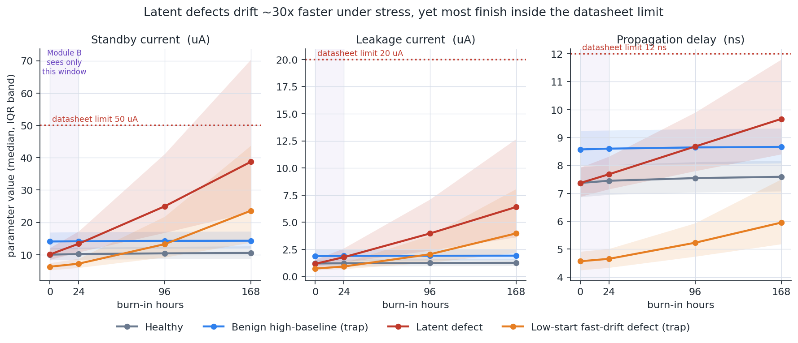
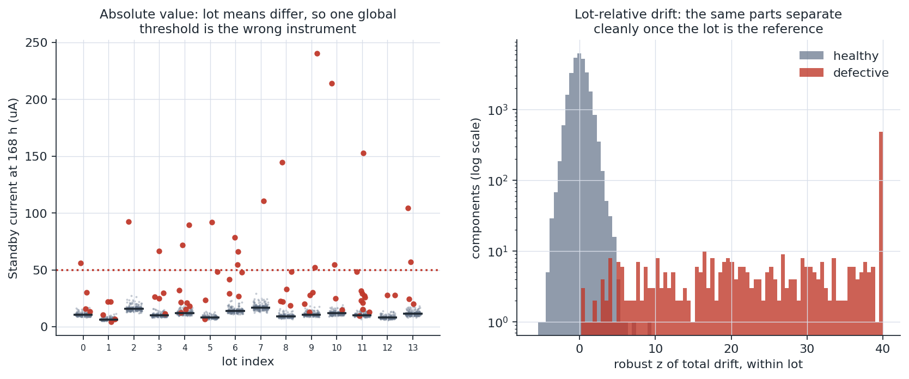
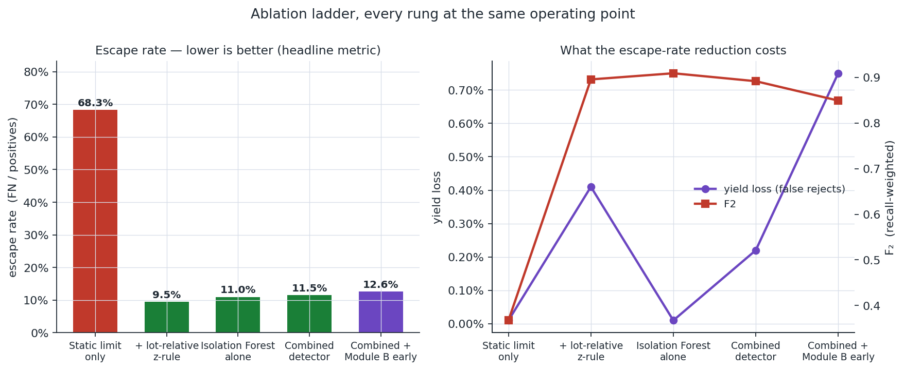
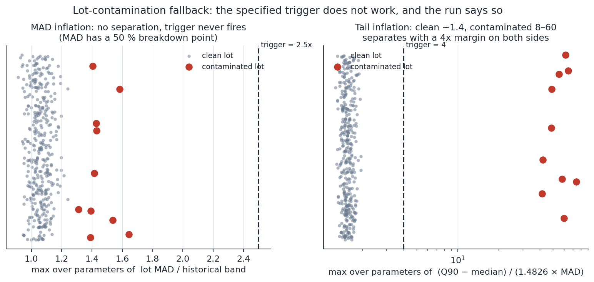
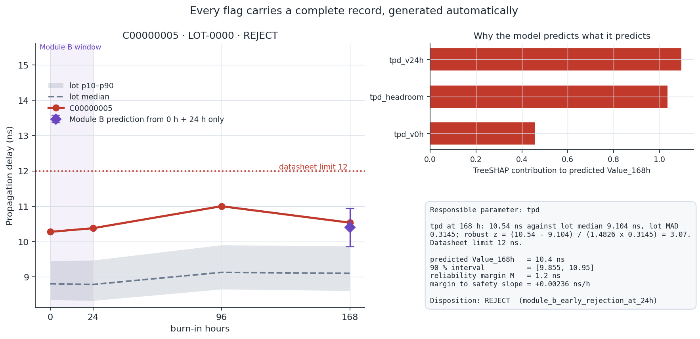

AI-Driven Anomaly Detection in Component Burn-In & Screening
High-reliability parts are soaked at 125 °C for 168 hours. Today's screen applies a static pass/fail limit at each checkpoint. Latent defects survive it: parts that stay inside the absolute limit for the whole soak while drifting in a way a healthy part does not. Those parts reach the payload.
100,000 components · 400 lots · 120 test lots held out at lot level · seed 26170 · CPU only
The limit is not set wrong. It is the wrong instrument.
A datasheet maximum answers is this reading legal? It cannot answer is this part behaving unlike its own lot? On our held-out run, 67.1 % of defective parts finish the soak below every datasheet maximum — no static threshold, however tuned, can catch them.
The physics is why burn-in works at all. Under an Arrhenius acceleration factor, a latent defect degrades roughly thirty times faster under stress while looking unremarkable at ambient:
AF = exp[ (Ea / k) × (1/T_use − 1/T_stress) ] Ea = 0.35 eV healthy mechanism → AF = 31 Ea = 0.70 eV latent defect → AF = 938 (9.4e2) V(t) = V₀ × [ 1 + βₓ · AF · (t/168)^n ] n = 0.5 healthy sub-linear, saturating wear-in n = 1.2 defective super-linear, accelerating runaway
The design is additive. Existing engineering limits stay in the loop and keep rejecting hard failures. The machine-learning layer runs on the population that survives the static checks.

We made the data hard on purpose, and the gate is in the code.
No public dataset has parametric burn-in telemetry with hidden 168 h terminal values and defect labels. NASA SMAP/MSL, NASA IMS and CWRU were reviewed and set aside — we downloaded the SMAP/MSL label index and checked it against its own schema rather than describing it from memory. It has 82 channel segments and 105 labelled anomaly sequences, but no part, lot or wafer identity and no terminal parametric value, so neither module can be scored on it.
So the data is generated — which means the generator is the thing under scrutiny, not the model. A generator that makes defects obvious proves nothing, because a model can only find what was deliberately embedded. We therefore gate it before any model is fitted:
| Acceptance check | Measured | Required | Verdict |
|---|---|---|---|
| Static-limit recall on defects | 32.87 % | < 50 % | PASS |
| Defects finishing under the datasheet maximum | 67.13 % | ≥ 60 % | PASS |
| Static-limit yield loss on healthy parts | 0.002 % | > 0 | PASS |
scripts/01_generate_data.py exits non-zero if this fails · tests/test_generator.py asserts it
Four populations injected to defeat trivial solutions
| Population | What it punishes |
|---|---|
| Latent defects under the limit | The escapes the problem statement is about. Unreachable by any static threshold. |
| Benign high-baseline healthy parts | High V₀, flat profile, 3–5σ above their own lot. Punishes level-based rules. |
| Low-start fast-drift defects | Unremarkable at 0 h, mildly elevated at 24 h. Sets the real ceiling on early rejection. |
| Contaminated lots | 15–20 % defective inside one lot, corrupting that lot's own median and MAD. |
Plus a chamber common-mode offset shared across each chamber load, which cancels under lot-relative statistics and survives naive absolute-drift rules.
The lot is the right reference frame.
The canonical case from the problem statement: in a lot averaging 10 µA, a part reading 45 µA is a severe anomaly even though the datasheet maximum is 50 µA. One line of arithmetic implements it, and a QA inspector can check it by hand:
robust_z(Vₜ) = ( Vₜ − median_lot(Vₜ) )
÷ ( 1.4826 × MAD_lot(Vₜ) )
Two detectors run in parallel and combine under a maximum-severity union, not an intersection — under a 20:1 cost where a miss is catastrophic, requiring both detectors to agree is the wrong operator. Each parameter produces its own severity; the component takes the worst, and the flag records which parameter drove it. A component is never averaged into a pass.
Calibrated, not assumed
Section 4.2 calls for a calibrated critical value. Swept against the 20:1 cost on validation lots, it lands at z = 8.
A textbook 3.5 σ would have cost a 10.1 % false-reject rate — the WATCH state fires on a single-parameter exceedance, so an uncalibrated value floods the inspector queue with healthy parts.

Decide at 24 hours, free 144 hours of chamber time.
Inputs are restricted to the 0 h and 24 h checkpoints by an allowlist enforced in code, not by convention. The test that proves it overwrites the 96 h and 168 h columns with nonsense and asserts every feature value and every prediction is bit-identical. If a judge suspects leakage, run it in front of them.
| Predictor | MAE iddq (µA) | MAE leak (µA) | MAE tpd (ns) |
|---|---|---|---|
| Last value | 1.5302 | 0.2589 | 0.2407 |
| Linear extrapolation | 2.6252 | 0.4351 | 0.8335 |
| Lot median trajectory | 1.5621 | 0.2695 | 0.2544 |
| Random Forest | 0.6306 | 0.1099 | 0.1377 |
1.7–2.4× better than the best baseline on every parameter · grouped CV over lot_id · units never pooled
Uncertainty is itself a reason to reject
A point prediction ignores its own uncertainty, which is exactly wrong when a miss is catastrophic. The rule acts on the upper bound of a locally-adaptive split-conformal interval calibrated on held-out lots:
S_safe = ( L_max − V₀ − M ) / 168 M = max( 0.10·L_max , 3σ_meas ) S_pred = ( V̂₁₆₈ − V₀ ) / 168 margin = S_safe − S_pred EARLY-REJECT if V̂₁₆₈(upper, 90 %) > L_max − M or S_pred > S_safe
The interval is locally adaptive, normalised by the spread of the forest's own trees. A constant-width band is calibrated on average and wrong where it matters: it hands an extreme part the same interval as a typical one, so a rule meant to refuse to clear what the model does not understand never widens for the parts it understands least. Measured coverage holds at 89.5–89.8 % against a nominal 90 %, while width spans a ~450× range.
Every rung at the same operating point, including the unflattering ones.
| Configuration | Escape rate | F₂ | Yield loss | Cost / 1k |
|---|---|---|---|---|
| Static limit only | 68.27 % | 0.367 | 0.01 % | 368.7 |
| + lot-relative z-rule | 9.51 % | 0.896 | 0.41 % | 55.3 |
| Isolation Forest alone | 10.99 % | 0.909 | 0.01 % | 59.5 |
| Combined detector | 11.48 % | 0.892 | 0.22 % | 64.1 |
| Combined + Module B early | 12.59 % | 0.849 | 0.75 % | 75.3 |
The first rung is the whole argument: the static screen escapes most defects, and every dynamic rung takes that to single digits. Beyond it the rungs are close — each is calibrated separately against the same escape target, so they land at similar escape rates by construction and the honest comparison is on what that escape rate costs.
Module B early rejection likewise does not improve terminal detection: the parts it rejects at 24 h are largely parts Module A catches at 168 h anyway. Its value is chamber time, and it costs yield. That is precisely why the early and terminal paths are kept separate — collapsing them destroys the value of early rejection.

The specified lot-contamination trigger does not fire.
The approach specifies the fallback as: if a lot's MAD exceeds a stated factor of a historical band, raise a lot integrity alarm. We implemented it, ran it, and it never fired.
MAD has a 50 % breakdown point. A lot that is 15–20 % defective inflates its MAD by only 1.1–1.5×, while clean lots already reach 1.18× at their 99th percentile. There is no separating factor. The very robustness that makes MAD the right denominator for a lot-relative z-score makes it blind as a contamination detector. Those are different jobs.
TI = ( Q₉₀(relative drift) − median ) / ( 1.4826 × MAD )
clean lots ≈ 1.4 the normal-theory value
contaminated lots 8 – 60
Both triggers are implemented, both are reported, and the alarm is their union. On held-out lots the tail-inflation index caught 4 of 4 contaminated lots with 0 false alarms; the specified MAD trigger caught 0. A regression test pins the finding so it cannot quietly disappear.

Explainability is a scored criterion, so we scored it.
Every flag carries a complete record, generated automatically, no free text:
- the responsible parameter,
- the lot-relative arithmetic, reproducible on a calculator,
- TreeSHAP contributions to the Module B prediction,
- ranked robust deviations for Module A, in median/MAD units,
- the raw four-point trajectory against the lot band,
- the predicted Value_168h, its interval, and the signed margin.
400 flags audited · 400 complete · 100 % of quoted z-scores reproduce by hand
Three dispositions, and how WATCH is scored
| State | n | Defective | Healthy |
|---|---|---|---|
| PASS | 28,094 | 16 | 28,078 |
| WATCH | 1,239 | 304 | 935 |
| REJECT | 667 | 490 | 177 |
WATCH counts as flagged, never as pass. An intermediate state that quietly absorbed defective parts would manufacture false negatives — the exact error a 20:1 cost punishes hardest. It costs yield, and we report it.

What we claim, and what we refuse to.
Kept
- The detector flags trajectory and lot-relative outliers that pass static limits.
- The predictor uses Value_0h and Value_24h only to forecast Value_168h.
- The evaluation weights false negatives explicitly and reports the yield loss that buys.
- Every flag carries a named parameter, checkable lot arithmetic and a numeric margin.
- Every reported number is reproduced by one command from a fixed seed.
Refused
- That SMAP, MSL or CWRU data predicts 168 h burn-in failure.
- That CWRU data gives remaining useful life.
- That these synthetic results establish ISRO field escape rates.
- That the system is qualified or validated on flight hardware.
Three minutes, in this order.
# 1. the gate the data had to pass (~2 s) python scripts/01_generate_data.py # 2. prove Module B cannot see the future (~30 s) pytest tests/test_checkpoint_discipline.py -v # 3. the inspector queue streamlit run app/inspector.py
In the dashboard, in order:
- Lot integrity alarms at the top of the queue — a whole suspect lot is a bigger finding than a single suspect part.
- Filter to REJECT, sort by severity, open the top part.
- On the trajectory, point at the shaded 0–24 h window: that is all Module B ever saw; the diamond at 168 h is what it predicted.
- Read the lot arithmetic aloud and check it on a calculator.
- Show the margin block, and note that V₀ cancels.
Questions to expect
| Question | Answer |
|---|---|
| "Synthetic data, so the results are meaningless." | The generator is gated: static limits catch only 32.9 % of defects, so the models solve a problem the incumbent method demonstrably cannot. The gate is a test, not a paragraph. |
| "How do I know Module B isn't peeking at 96 h?" | Run the discipline test. It corrupts the late checkpoints and asserts bit-identical predictions. The allowlist fails closed. |
| "Isolation Forest is a black box." | Inspectors act on the z-rule, which is arithmetic. The forest contributes severity; the record shows ranked deviations in median/MAD units. We deliberately do not fake an additive SHAP decomposition for an unsupervised score. |
| "What is your hardest case?" | Low-start fast-drift defects — depressed at 0 h, mildly elevated at 24 h. We recall 97.2 % of them, and they cap early rejection. We built that population to have an honest answer. |